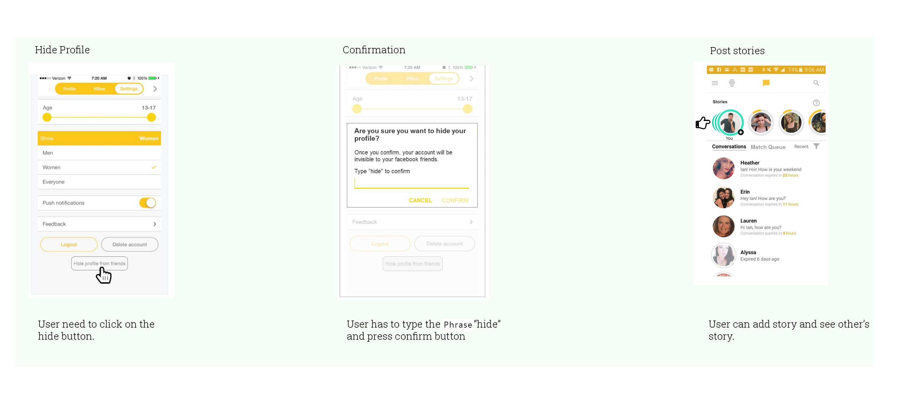
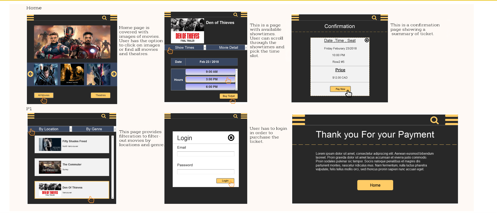

IAT 334 Interface Design, is a design course offered by SFU interactive arts and technology program. It focuses on user interface, user experience and theory of design principles. I took the course on Spring 2018. The course has three major projects and weekly assignments. The first project is individual and the last two projects are done in groups of 2-3. First project is about redesigning of social media such as Facebook, Twitter. The second project is about improving an existing Android/Ios application by introducing new features. Final project asks students to come up with an entirely new application idea, design its interface and build the entire app mockup.
Our team came up with an idea of an app which allows locals to post/suggest less visited (hidden) places in their city to visitors who are looking for unique places that are not known to many.
The app is called “HiddenGems”, it allows locals and visitors to post, review and upload pictures of places. The app categorizes activities and places. For example if the visitor is looking for a camping place, she can go to camping category.
Re-design of social media websites
In this project we were asked to make a mock of social networking website. After several sketches, I came up with a minimalist design. I devided contents in grids of three. Left side
is live preview of upcoming events, center is the posts and right side is list of the friends. The reason for this design is to avoid Confusion and to not overwhel users with too many
contents. For the color scheme I chose to go with dark blue for background, red for headlines and white for texts. I chose red for heading to direct user’s attention to content.
Also use of white text on black helps the contents to be more readable.
Add two non-existing features to "Bumble" app
In this project we were asked to add two non-existing features to an application, in our case “Bumble”. My partner and I researched to find the most needed feature. We came up
with the following missing features: 1-Ability to hide profile from FaceBook friends. 2-Adding story

Ordering Cinema Ticket (Mockup App)
Wireframes of the app
High-fidelity of the app

Remake of canvas webpage
Done in Axure
Original Canvas Website
Canvas Webpage Redesigned
Challenges
We faced a lot of challenges such as inability to agree on fixed schedule for meetings due to different course loads and work schedules.
Also none of us had mac computers at home, so we had to come to school to have access to mac design softwares such as sketch and principle.
Overcoming Chanllenges
We decided to do skype meeting two times per weeks to work on different parts of the project.
We divided the project into parts and roles. I chose to go with the overall design and interaction of the app because I like design in general and I thought it would be a great opportunity for me to expand on my existing design skills and create a project which is worth putting on my portfolio. The other two members agreed on creating contents and presentations slides.
My Role
I designed the whole project on my own from scratch. I used “sketch” for the main design and did the transitions and animation using “Principle”.
The app and its purpose
“HiddenGems” allows locals and visitors to post, review and upload pictures of places. The app categorizes activities and places. For example if the visitor is looking for a camping place, she can go to camping category. It helps people
to find hidden places because it allows locals to post areas that are
not known to tourists and it is hard to be found. It also categorises
areas to make it easier for users to find what they need.
“HiddenGems” provides step by step selection of locations and cities
which helps users to find hidden places without confussion. The purpose of our application is to get travellers together to
enjoy great locations and find hidden gems of different cities.
It works by getting users to create profiles for themselves and
navigate through to search for new places to visit and explore.
It brings travellers together as one big family. Users will be
interested because they will be excited to discover new gems of
their own and share it with this little world of travellers.
It will reduce boredom or guessing where to go to when you can
simply select a location and find really traditional interesting
places to visit.
Features + Functions
We got many features in this application such as rating places,
categories to filter the list of places provided, and most importantly
we have the "Adding A New Gem" feature. This feature is the core of
our application, as this will allow more places to be shown in the app
giving users more options and a better user experience. Since both visitor and locals can post reviews and recommend locations,
the application will first ask the user if they are locals or visitors. This way the top locations
recommended/reviewed by locals can be distinguished from visitors.
Next, it allows the user to enter all the details of the new gem. Lastly
the user chooses under which category falls the place they are
posting about.
Initial Sketches
UML / FlowChart
Styleguide
Journey-map
This shows how users interact with our application. Additionally, it shows users' feelings and what they were thinking while browsing
Final Design
Signup page
Log-in Page / Main Page
Choose Contry / Choose City
Country Page / City Page
Recommended Places / Selected Place
Locals' Review / Add Review (as a local)
All Categories / Places To Eat
Since our logo has colorful gems, we tried to use
google travel approach for categories. Each category
has its unique theme color similar to gem colors.
The color of contents and elements in category's
page also matches with the theme color.
Places To Eat(Cont) / Places To Hike
Places To Swim / Places To Swim(Cont)
Places To Camp / User's Profile
Local VS Visitor Option / Selecting Category to Suggest Or Review Places
 IAT 334 Interface Design, is a design course offered by SFU interactive arts and technology program. It focuses on user interface, user experience and theory of design principles. I took the course on Spring 2018. The course has three major projects and weekly assignments. The first project is individual and the last two projects are done in groups of 2-3. First project is about redesigning of social media such as Facebook, Twitter. The second project is about improving an existing Android/Ios application by introducing new features. Final project asks students to come up with an entirely new application idea, design its interface and build the entire app mockup.
Our team came up with an idea of an app which allows locals to post/suggest less visited (hidden) places in their city to visitors who are looking for unique places that are not known to many.
The app is called “HiddenGems”, it allows locals and visitors to post, review and upload pictures of places. The app categorizes activities and places. For example if the visitor is looking for a camping place, she can go to camping category.
IAT 334 Interface Design, is a design course offered by SFU interactive arts and technology program. It focuses on user interface, user experience and theory of design principles. I took the course on Spring 2018. The course has three major projects and weekly assignments. The first project is individual and the last two projects are done in groups of 2-3. First project is about redesigning of social media such as Facebook, Twitter. The second project is about improving an existing Android/Ios application by introducing new features. Final project asks students to come up with an entirely new application idea, design its interface and build the entire app mockup.
Our team came up with an idea of an app which allows locals to post/suggest less visited (hidden) places in their city to visitors who are looking for unique places that are not known to many.
The app is called “HiddenGems”, it allows locals and visitors to post, review and upload pictures of places. The app categorizes activities and places. For example if the visitor is looking for a camping place, she can go to camping category.